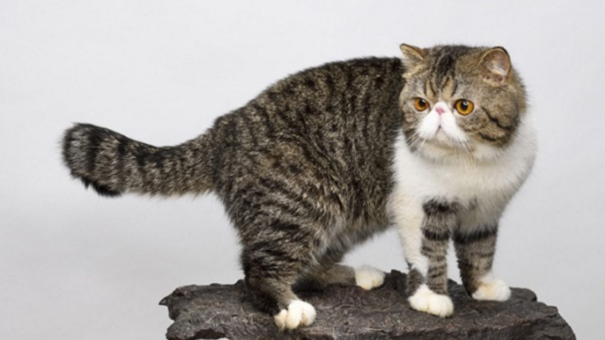

O Exótico é um gato criado pelo homem, os Americanos queriam um gato bonito, de bom temperamento, os Persas eram os favoritos mas o pelo longo era problemático. Assim surgiu o Exótico, do cruzamento do Persa com o Pelo Curto Americano, no início dos anos 60, nos EUA. A intenção era obter um animal com aparência roliça e atraente do Pelo Curto e as características físicas e comportamentais do Persa. A princípio, o resultado foi bom, mas havia etapas a serem solucionadas. O nariz era muito longo e o comportamento era muito “eléctrico”. Os melhores exemplares foram colocados para novas cruzas, com o passar do tempo e acasalamentos planejados chegou-se ao gato desejado. Foi reconhecido em 1966, nos EUA, logo alcançando popularidade na Europa. Hoje também é reconhecido pelas maiores entidades felinas mundiais – a CFA e a FIFE.
A principal característica do Exótico é sua pelagem aveludada, muito semelhante a um bicho de pelúcia. Sua cabeça é grande e redonda, com o focinho curto e as bochechas largas. O nariz é curto, com o bigode longo. Seu corpo é compacto e roliço, com cauda é média e espessa. A pelagem é curta e densa, com as colorações bastante variadas, um vez que o padrão aceita as cores dos gatos de pelo longo e o Pelo Curto Americano. Mas as cores dos olhos, da ponta do nariz e das almofadinhas das patas devem combinar com a cor do manto. O Exótico é considerado um gato de apartamento, porém em qualquer lugar que ele viva, ele acabará se adaptando. Muito inteligente, doce e com tendência a ganhar peso, o dono de um exemplar dessa raça deverá estar sempre atento à sua alimentação e doses de exercícios físicos. A raça apresenta um comportamento carinhoso e brincalhão, convivendo bem com crianças e outros gatos. Além disso, não é muito difícil fazer com que este gato se divirta, apenas uma bolinha de papel é o suficiente para desencadear corridas, cambalhotas e outras travessuras. Seu temperamento é parecido com o do Persa, necessitando de carinho e atenção constantes. Entretanto, o Exótico é bem mais ativo e alegre, isso se deve provavelmente, a herança dos Pelo Curto Americano e Pelo Curto Inglês.
Fonte: www.portalsaofrancisco.com.br
Voltar